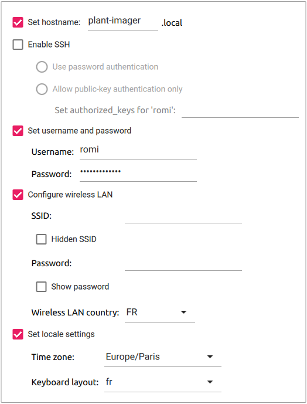

Plant Imager controllerLink
BOMLink
The bill of material is quite simple:
- Raspberry Pi 4B 4GB or 8GB
- Power supply, 5.1 V, 3.0 A, USB Type-C like this
- 7" TFT LCD TouchScreen 800x480 like this
- 7" TouchScreen case like this
- a microSD card, with a minimum of 8Go
Flash Raspberry Pi OSLink
The procedure to install and configure is as follows:
- Open the
Imagerapp - Choose the OS, we use the
Raspberry Pi OS (64bit)as we have an RPi4 - Select the storage device (microSD)
- Click the "Advanced options" icon (bottom right)
- "Set hostname" to
plant-imager, add a number or another indication if you plan to have more than one - Do NOT "Enable SSH", except if you know what you are doing!
- "Set username and password" to
romiandmy_raspberry! - Do NOT "Configure wireless LAN", except the "Wireless LAN country", as we will later create an Access Point!
- Change the "locale settings" to match yours
- Finally, hit the "Write" button to flash the OS to the microSD.
Important
We use the 64bit version with the Raspberry Pi Desktop NOT "Lite" as we want to use it to display a user interface.
Important
Do NOT forget to replace the (not so) secret password by the one you used!
You should end up with something like this:

Manually setting the advanced optionsLink
Hereafter we show how to manually define the advanced options after flashing the OS without defining any. This requires to boot the RPi with a screen and keyboard.
Warning
There is NO NEED to do this if you have followed the previous instructions on how to configure the advanced options prior to flashing the microSD card!
The first time you boot your RPi with your new image, you can follow the steps of the "Welcome" screen:
- Select a country, language, keyboard layout, timezone.
- Do NOT connect to a Wi-Fi network!
- Change the default user
piand passwordraspberryto: - user:
romi - password:
my_raspberry!. - (Optional) Update packages to their newest version, this OBVIOUSLY requires an internet connexion.
Important
Do NOT forget to replace the (not so) secret password by the one you used!
1. Set the hostnameLink
We strongly advise to give a specific hostname to each device to avoid having the all named raspberrypi.
Important
RFCs mandate that a hostname's labels may contain only the ASCII letters 'a' through 'z' (case-insensitive), the digits '0' through '9', and the hyphen. Hostname labels cannot begin or end with a hyphen. No other symbols, punctuation characters, or blank spaces are permitted.
Choose an option, then reboot the RPi!
It is possible to set the hostname with the raspi-config tool, in a terminal:
sudo raspi-config
1 System Options > S4 Hostname.
Enter the desired hostname, e.g. plant-imager, and hit <OK>.
It is possible to set the hostname manually by changing /etc/hostname & /etc/hosts with:
export NEW_HNAME="plant-imager"
sudo sed "s/raspberrypi/$NEW_HNAME/" /etc/hostname
sudo sed "s/raspberrypi/$NEW_HNAME/" /etc/hosts
2. Enable SSHLink
Enabling SSH allows to connect to the plant-imager device from any machine connected to the Plant Imager Access Point.
Warning
This represents a security risk if you do not change the default user pi and password raspberry or use a weak password!
It is possible to enable SSH with the raspi-config tool, in a terminal:
sudo raspi-config
5 Interfacing Options > P2 SSH, and select <Yes>.
It is possible to enable SSH with systemctl, in a terminal:
sudo systemctl enable ssh
sudo systemctl start ssh
Once the plant-imager device will reboot, you can SSH to this device using a machine connected to the same network.
You will need the IP address of the plant-imager device.
It is accessible in a terminal with:
hostname -l
10.10.10.1.
3. Set username and passwordLink
If at the first boot you did NOT change the default pi user & raspberry password you can still do it as follows:
- Create the user
romiwith:This will also create the home directory for this user and ask for a password.sudo adduser romi - Add this user to
dialout,video&sudogroups with:sudo adduser romi dialout sudo adduser romi video sudo adduser romi sudo - Remove the default
piuser with:sudo deluser --remove-home pi
Rotate the 7" touchscreenLink
To wire the 7" touchscreen you can follow these instructions. Some people says that there is no need to wire SCL & SDA... Do what you want!
If you are using the 7" touchscreen with the case we described in the BOM, you may notice it is rotated by 180°. To rotate the 7" touchscreen, with an RPi 4 and the latest Raspberry OS:
- Hit the raspberry main menu
- Got to
Preference>Screen Configuration - On the
Screen Layout Editormenu bar, hitConfigure, selectScreens>DSI-1>Orientationand selectinverted. - Hit the "Green check" icon to validate!
- It should ask you to reboot to apply changes.
ROMI softwareLink
Install OquamLink
Install the system requirementsLink
To install the system requirements, simply run:
sudo apt install build-essential cmake git libpng-dev libjpeg-dev
Clone the sourcesLink
To clone the sources from the ROMI GitHub repository, simply run:
git clone --branch ci_dev --recurse-submodules https://github.com/romi/romi-rover-build-and-test.git
Note
The --recurse-submodules option will automatically initialize and update each submodule in the repository.
Compile the sourcesLink
Then move to the cloned directory and compile the oquam app with:
cd romi-rover-build-and-test
mkdir build
cd build
cmake ..
make oquam
Configure the controller to act as a hotspotLink
To configure the RPi4 to act as a hotspot you may use the network-hotspot-setup.sh CLI, as root:
sudo bash tests-hardware/network-hotspot-setup.sh --wlan wlan0 --ssid "Plant Imager" --pwd "my_secret_password!"
This will:
- install the required dependencies
- configure the routing tables
- set the name of the SSID
- set the password to use to connect to the hotspot
Important
Change the password as it is not so secret anymore!
Configure rcomLink
cd romi-rover-build-and-test
git submodule init # if not done yet (empty 'rcom' directory)
git submodule update
cd build
cmake ..
make rcom-registry
Start rcom-registry:
./bin/rcom-registry
Power the Picamera, you should see a message when it connects to the AP!
Configure live-previewLink
You have to install and configure appache2.
Let's start by installing the requirements:
sudo apt install apache2
Change DocumentRoot in /etc/apache2/sites-enabled/000-default.conf to /home/romi/romi-rover-build-and-test/applications/romi-monitor/
Also add:
<Directory /home/romi/romi-rover-build-and-test/applications/romi-monitor/>
Options Indexes
AllowOverride None
Require all granted
</Directory>
apache2.service with systemctl:
sudo systemctl restart apache2.service
Finally, on the controller, open a web browser (Chromium on the RPi) at 10.10.10.1/camera.html.
Then scroll down to hit the "connect" icon.
If the PiCamera is ON, you should now see something!
It's now time to adjust the lens! GOOD LUCK!
Install the plant-imager libraryLink
Install system requirementsLink
You will need python3 and pip, that can be easily installed as follows:
sudo apt update
sudo apt install python3 python3-pip
Add the user's private bin to the $PATHLink
We have to add a few lines to the .bashrc file so the locally installed Python library are available.
To do so, simply copy/paste the following lines in the terminal:
cat<<EOF >> ~/.bashrc
# set PATH so it includes user's private bin if it exists
if [ -d "$HOME/.local/bin" ] ; then
PATH="$HOME/.local/bin:$PATH"
fi
EOF
Clone the sourcesLink
To clone the plant-imager sources from the ROMI GitHub repository, simply run:
cd # Move back to the user home directory
git clone --branch dev_lyon --recurse-submodules https://github.com/romi/plant-imager.git
Note
The --recurse-submodules option will automatically initialize and update each submodule in the repository.
Install the sourcesLink
Then move to the cloned directory and install the plant-imager Python library and its submodules (plantdb & romitask) with:
# Don't forget to activate the environment!
cd plant-imager
# Install `plantdb` requirements & sources from submodules:
python -m pip install -r ./plantdb/requirements.txt
python -m pip install -e ./plantdb/
# Install `romitask` sources from submodules:
python -m pip install -r ./romitask/requirements.txt
python -m pip install -e ./romitask/
# Install `plant-imager`:
python -m pip install -e .
Test the installationLink
To test the installation of the Python libraries you can run:
python -c "import plantdb"
python -c "import romitask"
python -c "import plantimager"
If no error message is returned, you are all set with this part, well done!